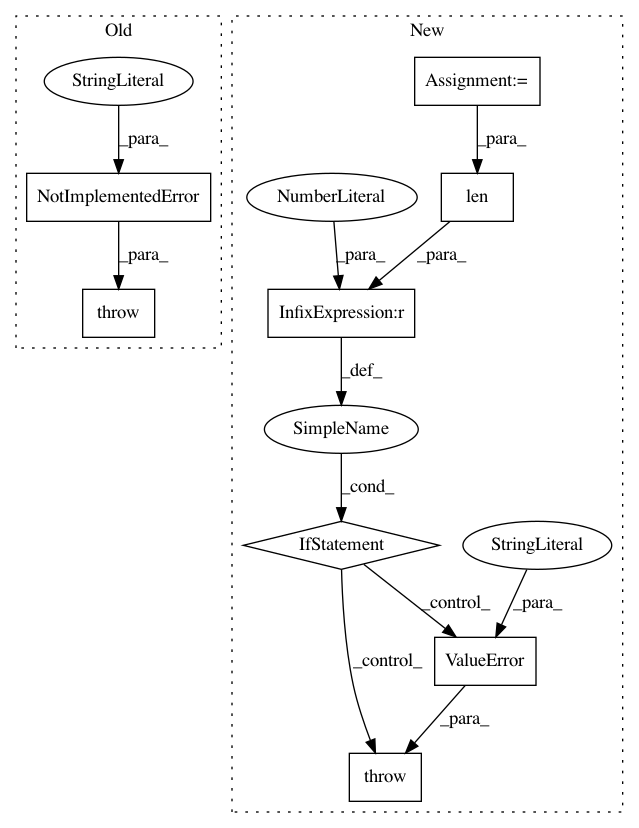

08f049c9fc5fc0f3da5a830de72a583007cdec66,elfi/methods/methods.py,BayesianOptimization,__init__,#BayesianOptimization#Any#Any#Any#Any#Any#Any#Any#Any#Any#Any#,319
Before Change
if not isinstance(initial_evidence, int):
// Add precomputed data
raise NotImplementedError("Initial evidence must be an integer")
if initial_evidence > 0:
self.init_acquisition = UniformAcquisition(target_model)
else:
After Change
if not isinstance(initial_evidence, int):
// Add precomputed batch data
params = self.to_array(initial_evidence, self.parameters)
target_model.update(params, initial_evidence[self.target])
initial_evidence = len(params)
// TODO: check if this can be removed
if initial_evidence % self.batch_size != 0:
raise ValueError("Initial evidence must be divisible by the batch size")
self.acquisition_method = acquisition_method or LCBSC(target_model)
self.target_model = target_model
self.n_initial_evidence = initial_evidence
In pattern: SUPERPATTERN
Frequency: 3
Non-data size: 8
Instances
Project Name: elfi-dev/elfi
Commit Name: 08f049c9fc5fc0f3da5a830de72a583007cdec66
Time: 2017-03-31
Author: jarno.lintusaari@aalto.fi
File Name: elfi/methods/methods.py
Class Name: BayesianOptimization
Method Name: __init__
Project Name: tensorflow/datasets
Commit Name: d4ede9da4c0ccda38a4257f1c6d4bac0be1e2040
Time: 2020-11-10
Author: epot@google.com
File Name: tensorflow_datasets/scripts/cli/build.py
Class Name:
Method Name: _build_datasets
Project Name: mil-tokyo/webdnn
Commit Name: 91a9437c8c6ed68d14884cc040c988301a7430ea
Time: 2019-06-25
Author: hidaka@mi.t.u-tokyo.ac.jp
File Name: src/graph_transpiler/webdnn/frontend/chainer/functions/normalization.py
Class Name:
Method Name: _convert_normalize_l2